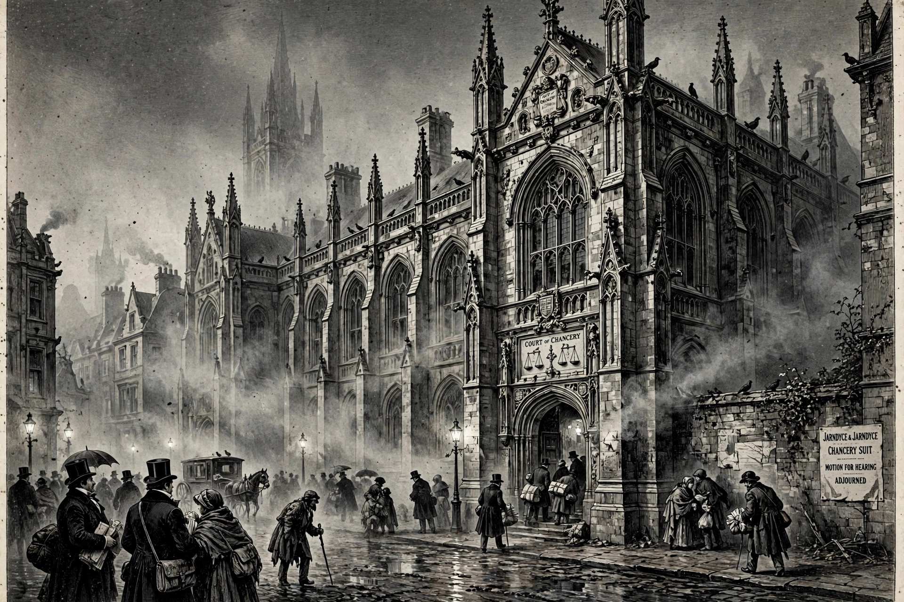

Bleak House is a novel by the English author Charles Dickens, first published as a 20-episode serial between March 1852 and September 1853. Widely held to be one of Dickens's finest and most complex works, it narrates, through dual narration, the interlocking stories surrounding the interminable Court of Chancery case of Jarndyce and Jarndyce.
| Bleak House | |
|---|---|
| Author | Charles Dickens |
| Language | English |
| Genre | Novel |
| Published | 1852–1853 (serial); 1853 (book) |
| Publisher | Bradbury and Evans |

The novel is told partly by an omniscient present-tense narrator and partly by Esther Summerson, a young woman of unknown parentage raised by her austere godmother. Esther becomes housekeeper at Bleak House, the home of the kindly John Jarndyce, guardian of the wards of court Ada Clare and Richard Carstone. Richard becomes obsessed with the expectation of inheriting under Jarndyce and Jarndyce, a suit that has dragged on for generations and consumes the lives and fortunes of everyone it touches. A parallel mystery follows the proud Lady Dedlock, whose buried secret is hunted by the lawyer Tulkinghorn and the detective Inspector Bucket, one of the first detectives in English fiction.
Dickens mounts a celebrated satire on the English legal system: the Chancery suit, based partly on real cases, drags on until the entire estate has been absorbed in costs. The novel opens with its famous depiction of London fog as a symbol of legal and moral obscurity. Other themes include poverty, public health, and the interconnectedness of all social classes.
The novel has been adapted many times for stage, film, and television; the BBC's 2005 serial, written by Andrew Davies, won widespread acclaim and several awards.